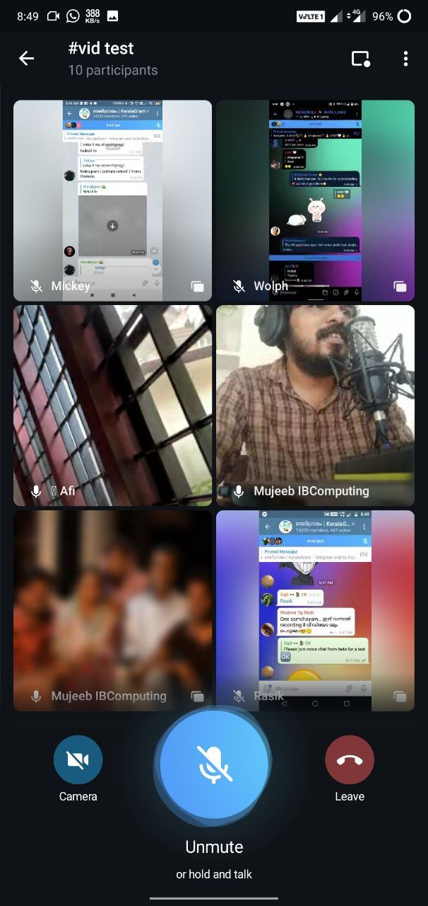
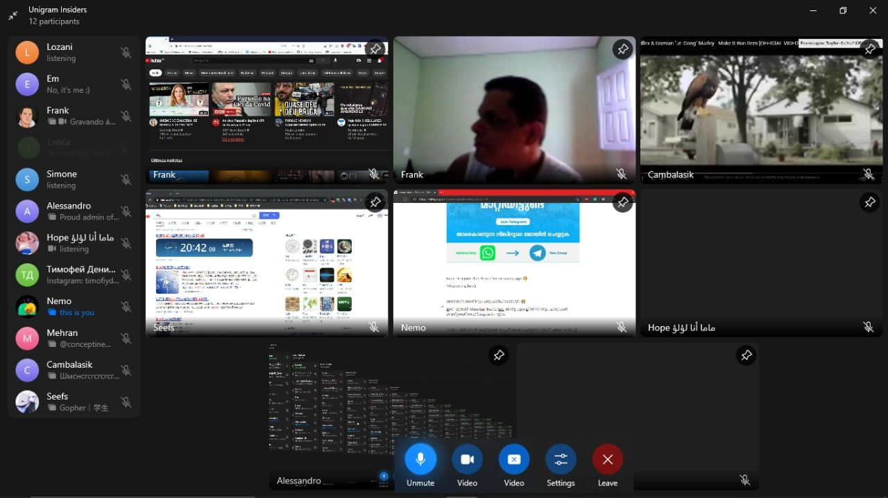
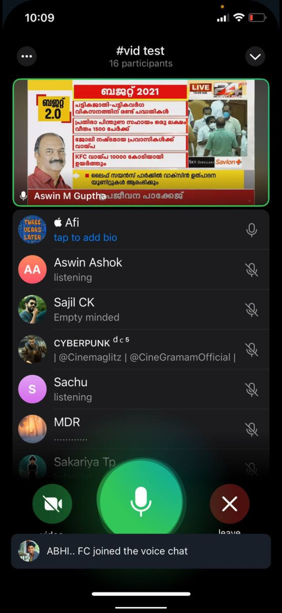
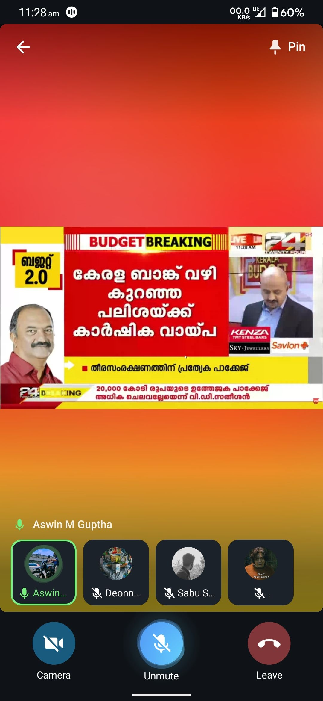

ഗ്രൂപ്പ് വീഡിയോ ചാറ്റ് എത്തി, ഓൺലൈൻ ക്ലാസ്സുകൾക്ക് ഇനി ടെലിഗ്രാം!
വീഡിയോ call നു പിന്നാലെ Telegram Messenger, അവരുടെ ഏറ്റവും പുതിയ ഫീച്ചറായ ഗ്രൂപ്പ് വീഡിയോ ചാറ്റ് കൂടി അവതരിപ്പിച്ചതിലൂടെ ഇനിമുതൽ ഓൺലൈൻ ക്ലാസ്സുകൾക്ക് ടെലിഗ്രാമിനെക്കാൾ മികച്ച ഒരിടം വേറെ ഇല്ലെന്നു തന്നെ പറയാം.
നിലവിൽ ഏറ്റവും കൂടുതൽ ആളുകൾ സന്ദേശ വിനിമയത്തിനായി ഉപയോഗിക്കുന്ന ആപ്പാണ് വാട്സാപ്പ്. എന്നാൽ Online ക്ലാസ്സുകൾ നടത്തുന്നതിനൊക്കെ ഒട്ടേറെ പരിമിതികൾ വാട്സാപ്പിലുണ്ട്.
അതിൽ ഏറ്റവും പ്രധാനപ്പെട്ടത് ഫയലുകൾ share ചെയ്യുന്നതിലുള്ള limitations ആണ്.
100MB ൽ കൂടുതൽ ഉള്ള ഡോക്യുമെന്റോ 16MB യിൽ കൂടുതലുള്ള വീഡിയോയോ ഒന്നും തന്നെ വാട്സാപ്പ് വഴി നേരിട്ട് അയക്കാൻ കഴിയില്ല.
ഇവിടെയൊക്കെയാണ് ടെലിഗ്രാം മെസ്സഞ്ചർ ജനപ്രിയമാവുന്നത്...
ഒരു ക്ലാസ്സ് റൂം പോലെ തന്നെ ടെലിഗ്രാം ഗ്രൂപ്പുകളെ മാറ്റിയെടുക്കാൻ സാധിക്കും.
ഗ്രൂപ്പിന്റെ പൂർണ്ണ നിയന്ത്രണം admin ആയ അദ്ധ്യാപകർക്ക് ഉണ്ടാവും...
• അനാവശ്യമായി ഗ്രൂപ്പിൽ അയക്കപ്പെട്ട സന്ദേശങ്ങൾ നീക്കം ചെയ്യാൻ കഴിയും.
• 2 GB വരെ വലിപ്പമുള്ള ഏതൊരു ഫയലും ടെലിഗ്രാം വഴി അയക്കാൻ കഴിയും.
• വൈകി join ചെയ്ത student നും ഗ്രൂപ്പിലെ ആദ്യം മുതലുള്ള മെസ്സേജുകൾ കാണാൻ കഴിയും.
• ഗ്രൂപ്പിൽ വന്ന വീഡിയോസോ ഫയലുകളോ ഗാലറിയിൽ നിന്നും ഡിലീറ്റ് ആയാലും പിന്നീട് എപ്പോൾ വേണമെങ്കിലും ചാറ്റിൽ നിന്നും അതൊക്കെ വീണ്ടും ഡൌൺലോഡ് ചെയ്തെടുക്കാൻ കഴിയും.
• ഫോൺ നഷ്ടപ്പെട്ടാലും ടെലിഗ്രാമിലെ ചാറ്റുകൾ ഒന്നും miss ആവില്ല. ആ നമ്പറിൽ നിന്ന് ഏത് ഫോണിൽ ടെലിഗ്രാം എടുത്താലും ചാറ്റുകൾ കിട്ടും.
• അധ്യാപകർക്ക് പ്രധാനപ്പെട്ട മെസ്സേജുകൾ ഗ്രൂപ്പിൽ pin ചെയ്ത് വെക്കാൻ കഴിയും.
• ഒരു മെസ്സേജിൽ touch ചെയ്താൽ ആ മെസ്സേജിന് students നൽകിയ മറുപടികൾ മാത്രമായി (view thread) കാണാൻ കഴിയും.
• വോയ്സ്, വീഡിയോ ചാറ്റുകൾ വഴി ക്ലാസ്സുകൾ എടുക്കാൻ കഴിയും. (ഇതിനെപ്പറ്റി താഴെ വിശദീകരിച്ചിട്ടുണ്ട്.)
• @GroupAttendanceBot പോലുള്ള ബോട്ടുകൾ ഉപയോഗിച്ച് അറ്റന്റൻസ് എടുക്കാൻ കഴിയും.
• @QuizBot അല്ലെങ്കിൽ @KLQuizBot ഉപയോഗിച്ച് multiple choice questions ഉള്ള ക്വിസ്സുകൾ നടത്താൻ കഴിയും.
• ക്ലാസ്സുകൾ കഴിഞ്ഞ് poll option ഉപയോഗിച്ച് സ്റ്റുഡന്റസിന്റെ feedbacks എളുപ്പത്തിൽ അറിയാൻ കഴിയും.
നിലവിൽ ഒരുപാട് ക്ലാസ്സ് ഗ്രൂപ്പുകൾ ടെലിഗ്രാമിലേക്ക് shift ചെയ്തിട്ടുണ്ട്. എങ്കിലും കൂടുതൽ അധ്യാപകരും വാട്സാപ്പിലൂടെയും ഗൂഗിൾ മീറ്റിലൂടെയും ഒക്കെയാണ് ക്ലാസ്സുകൾ നടത്തിപ്പോരുന്നത്. വീഡിയോ കോൺഫറൻസിന് ഗൂഗിൾ മീറ്റ്, പഠിക്കാനുള്ള ഫയലുകളും മറ്റും കൈമാറാൻ വാട്സാപ്പ്.. ഇങ്ങനെ.
എന്നാൽ ടെലിഗ്രാമിന്റെ പുതിയ അപ്ഡേഷനിൽ വീഡിയോ ചാറ്റ് & സ്ക്രീൻ ഷെയറിങ് വന്നതോടെ ഇതെല്ലാം ഒരു കുടക്കീഴിൽ കിട്ടും എന്നായിട്ടുണ്ട്.
മാസങ്ങൾക്ക് മുമ്പ് ടെലിഗ്രാം ഗ്രൂപ്പ് വോയ്സ് ചാറ്റ് അവതരിപ്പിച്ചിരുന്നു.
ഗ്രൂപ്പിനുള്ളിൽ എത്രപേർക്ക് വേണമെങ്കിലും join ചെയ്ത് പരസ്പരം സംസാരിക്കാൻ കഴിയുന്ന, Clubhouse ലേതിന് സമാനമായ വോയ്സ് ചാറ്റ്.
ഇതിലേക്കാണ് ഇപ്പോൾ video chat & screen sharing കൂടി എത്തിയിരിക്കുന്നത്.
ടീച്ചർക്ക് (admin) ഇങ്ങനെ അതാത് ഗ്രൂപ്പിലെ വോയ്സ് / വീഡിയോ ചാറ്റ് വഴി ക്ലാസ്സുകൾ എടുക്കാനും സ്റ്റുഡന്റ്സിന് അത് തത്സമയം കാണാനും കേൾക്കാനും കഴിയും. ആവശ്യമെങ്കിൽ ടീച്ചർ ഒഴികെയുള്ളവരെ മ്യൂട്ട് ചെയ്യാൻ സാധിക്കും. ഇങ്ങനെ mute ചെയ്യപ്പെട്ട സമയത്തും ക്ലാസ്സിനിടക്ക് സംശയങ്ങൾ ഉണ്ടെങ്കിൽ allow me to speak ബട്ടൺ ക്ലിക്ക് ചെയ്ത് ടീച്ചറോട് സംസാരിക്കാൻ ആവശ്യപ്പെടാം. ഓരോരുത്തരുടെയും voice നിയന്ത്രിക്കാം. ടെലിഗ്രാമിൽ തന്നെ ഈ ചാറ്റുകൾ റെക്കോർഡ് ചെയ്ത് സൂക്ഷിക്കുകയും ചെയ്യാം.
NB: വോയ്സ് ചാറ്റ് വീഡിയോ ചാറ്റ് ആക്കി മാറ്റാൻ, അതിന്റെ title എഡിറ്റ് ചെയ്ത് #vid എന്ന് ചേർക്കണം
വാട്സാപ്പ് ഒരിക്കലും ഒരു മോശം ആപ്പ് ആണെന്നല്ല പറഞ്ഞത്.
ഓൺലൈൻ ക്ലാസ്സുകൾ ഉൾപ്പെടെയുള്ള കാര്യങ്ങൾ ഒഴിവാക്കാൻ പറ്റാത്ത ഇതുപോലുള്ള സാഹചര്യത്തിൽ വാട്സാപ്പിന് പരിമിതികളുണ്ട് എന്നത് വാസ്തവം തന്നെയാണ്.
സാഹചര്യങ്ങൾക്ക് അനുസരിച്ച് ഇത്തരം കാര്യങ്ങളിൽ നമ്മുടെ തലമുറയെങ്കിലും മാറി ചിന്തിക്കേണ്ടിയിരിക്കുന്നു.
അധ്യാപകർ അടക്കമുള്ള ഒരു വലിയ വിഭാഗത്തിന് ഇന്റർനെറ്റ് വഴി ചാറ്റ് ചെയ്യാൻ, ഫോട്ടോയും വിഡിയോയും അയക്കാൻ വാട്സാപ്പിനെക്കൾ മികച്ച മാർഗ്ഗങ്ങൾ ഉണ്ടെന്നുള്ള അറിവ് ഇല്ലാത്തതിനാലുള്ള പ്രശ്നവും ഉണ്ട്.
കഴിഞ്ഞ ദിവസം കസിൻ ചേച്ചി വിളിച്ചിട്ട് ടെലിഗ്രാമിനെപ്പറ്റി കുറച്ചു സംശയങ്ങൾ ചോദിച്ചിരുന്നു...
ചേച്ചിയുടെ മോളുടെ സ്കൂളിൽ നിന്ന് വിളിച്ചിട്ട് ഇനി മുതൽ ഓൺലൈൻ ക്ലാസ്സ് ടെലിഗ്രാമിൽ ആണെന്ന് പറഞ്ഞൂത്രേ. ❤️
- DeOn




Realated topics:
• വാട്സാപ്പ് ഗ്രൂപ്പ് vs ടെലിഗ്രാം ഗ്രൂപ്പ്